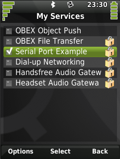

|
Home · All Namespaces · All Classes · Grouped Classes · Modules · Functions | |
Files:
This tutorial shows how to implement a simple Bluetooth service in Qt Extended.
A Bluetooth service allows others to connect to your device via Bluetooth and perform some operation. For example, a Bluetooth OBEX Object Push service allows others to connect to your device and transfer files. Qt Extended Bluetooth services can be controlled from the Bluetooth settings application.
The Bluetooth services are managed internally by the Bluetooth Service Manager. For more information about the system architecture for Bluetooth services, see Bluetooth Service Management Framework.
QBluetoothAbstractService provides a convenient way to implement Bluetooth services within Qt Extended. To create a Bluetooth service, just subclass QBluetoothAbstractService, and your service will automatically be registered as a Bluetooth service within Qt Extended. This means the service will be accessible to external parties through QBluetoothServiceController. It will also be shown in the list of local services in the Bluetooth settings application, allowing end users to modify the service's settings.
Naturally, it is possible to implement Bluetooth services outside of Qt Extended by using the BlueZ libraries and standard Linux tools. However, such services cannot be accessed by end users through Qt Extended, and cannot be controlled programmatically through the Qt Extended libraries.
This example creates a Bluetooth Serial Port service that listens for RFCOMM client connections and sends a "hello, world" message to a client before disconnecting.
When creating a Bluetooth service, you must register a SDP record so that other devices can find your service during a SDP query. You can use QBluetoothSdpRecord to either assemble a SDP record yourself, or load one from a XML file.
This example uses an XML file, SerialPortSDPRecord.xml, to encapsulate the SDP record data. The contents of this file looks something like this:
<record>
<attribute id="0x0001">
<sequence>
<uuid value="0x1101" />
</sequence>
</attribute>
<attribute id="0x0004">
<sequence>
<sequence>
<uuid value="0x0100" />
</sequence>
...
One way to create such an XML file is to use the Linux command sdptool. For example, sdptool add registers a service, and sdptool browse --xml local prints all registered local services in XML format:
$> sdptool add SP
Serial Port service registered
$> sdptool browse --xml local
<record>
<attribute id="0x0000">
<uint32 value="0x0001004b" />
</attribute>
<attribute id="0x0001">
<sequence>
<uuid value="0x1101" />
</sequence>
</attribute>
<attribute id="0x0004">
<sequence>
<sequence>
<uuid value="0x0100" />
</sequence>
<sequence>
<uuid value="0x0003" />
<uint8 value="0x01" />
</sequence>
...
You can use the generated output as your SDP record XML file, provided you:
Here is the BluetoothSerialPortExampleService class definition:
class BluetoothSerialPortExampleService : public QBluetoothAbstractService
{
Q_OBJECT
public:
BluetoothSerialPortExampleService(QObject *parent = 0);
virtual ~BluetoothSerialPortExampleService();
virtual void start();
virtual void stop();
virtual void setSecurityOptions(QBluetooth::SecurityOptions options);
private slots:
void newRfcommConnection();
private:
bool startRfcommServer(int rfcommChannel);
QBluetooth::SecurityOptions m_securityOptions;
quint32 m_sdpRecordHandle;
QBluetoothRfcommServer *m_rfcommServer;
};
The start(), stop() and setSecurityOptions() methods are pure virtual in QBluetoothAbstractService and so must be implemented.
The m_sdpRecordHandle member variable holds the SDP record handle for this service. This handle should be retained when the SDP record is registered so it can be used later to unregister the record if necessary.
The example uses QBluetoothRfcommServer is used to implement the RFCOMM server functionality.
The BluetoothSerialPortExampleService constructor looks like this:
BluetoothSerialPortExampleService::BluetoothSerialPortExampleService(QObject *parent)
: QBluetoothAbstractService("SerialPortExampleService", tr("Serial Port Example"), parent)
{
m_securityOptions = 0;
m_sdpRecordHandle = 0;
m_rfcommServer = 0;
}
The first argument to the base class constructor ("SerialPortExampleService" in this example) is the name of the service. This name must be unique among Qt Extended Bluetooth services, as it is used internally to identify the service.
The second argument is an internationalized, human-readable name that can be displayed to the end user. This string will be used, for example, to list local Bluetooth services in the Bluetooth settings application:

The start() implementation registers a SDP record using SerialPortSDPRecord.xml, starts the RFCOMM server for the service, and emits started() to tell Qt Extended whether the service started successfully or not:
void BluetoothSerialPortExampleService::start()
{
if (!m_rfcommServer)
m_rfcommServer = new QBluetoothRfcommServer(this);
// Read the SDP record that we want to register for this service.
QFile file(Qtopia::qtopiaDir() + "/etc/bluetooth/sdp/SerialPortSDPRecord.xml");
if (!file.exists()) {
emit started(true, tr("Cannot find SDP record file"));
return;
}
if (!file.open(QIODevice::ReadOnly)) {
emit started(true, tr("Error reading SDP record file"));
return;
}
QBluetoothSdpRecord record = QBluetoothSdpRecord::fromDevice(&file);
file.close();
// QBluetoothAbstractService::registerRecord() registers a SDP record and
// returns the service record handle for the newly registered service.
m_sdpRecordHandle = registerRecord(record);
if (m_sdpRecordHandle == 0) {
emit started(true, tr("Error registering the SDP service"));
return;
}
int rfcommChannel = QBluetoothSdpRecord::rfcommChannel(record);
if (!startRfcommServer(rfcommChannel)) {
// The server could not be started, so clean up and unregister the
// SDP record using QBluetoothAbstractService::unregisterRecord().
unregisterRecord(m_sdpRecordHandle);
m_sdpRecordHandle = 0;
emit started(true, tr("Error starting RFCOMM server"));
return;
}
qDebug() << "Started example Bluetooth service";
emit started(false, QString());
}
Notice that started() must be emitted regardless of whether the service was started successfully or not.
Do not call start() from within your own code, because it is automatically invoked by the Bluetooth Service Manager when the service should be started. This could be because:
Note the path /etc/bluetooth/sdp/ is used when referencing SerialPortSDPRecord.xml. This is because that is the path specified by qbuild.pro for the installation of the XML file:
# include the SDP record XML file
# /etc/bluetooth/sdp is where other Qtopia SDP record XML files are located
sdprecord.hint=image
sdprecord.files=SerialPortSDPRecord.xml
sdprecord.path=/etc/bluetooth/sdp
The stop() method closes the service's RFCOMM server, unregisters the SDP record that was registered in start(), and emits stopped() to tell Qt Extended that the service has stopped:
void BluetoothSerialPortExampleService::stop()
{
if (m_rfcommServer) {
m_rfcommServer->close();
delete m_rfcommServer;
m_rfcommServer = 0;
}
if (!unregisterRecord(m_sdpRecordHandle))
qDebug() << "Error unregistering the SDP service";
m_sdpRecordHandle = 0;
qDebug() << "Stopped example Bluetooth service";
emit stopped();
}
Finally, setSecurityOptions() sets the security options for the service:
void BluetoothSerialPortExampleService::setSecurityOptions(QBluetooth::SecurityOptions options)
{
if (m_rfcommServer)
m_rfcommServer->setSecurityOptions(options);
m_securityOptions = options;
}
This method is also invoked automatically by the Bluetooth Service Manager when the security options should be changed.
The Bluetooth Service Manager stores service settings in Bluetooth.conf. This stores the security options for known services and defines whether a service should be automatically started the next time it is created. A default configuration file is provided at etc/default/Trolltech/BluetoothServices.conf.
| Copyright © 2009 Trolltech | Trademarks | Qt Extended 4.4.3 |